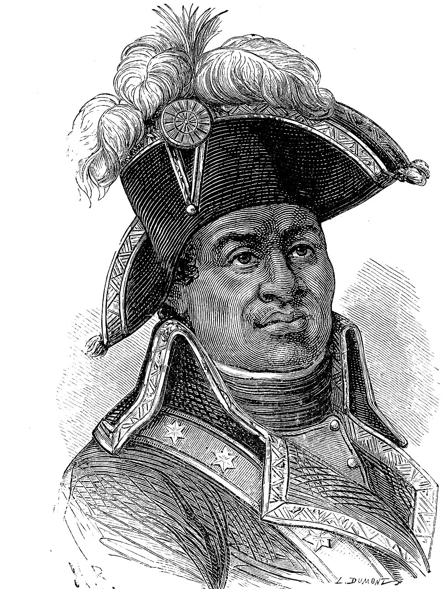
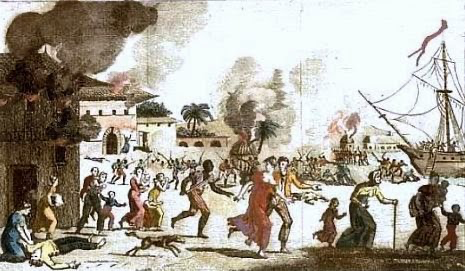
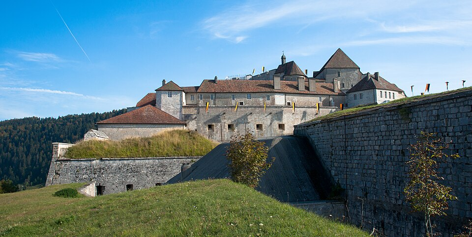

⏱️ 10초 카드 · 아이티 혁명 (1743?~1803)
노예에서 장군으로노예제 폐지 헌법검은 스파르타쿠스
여는 질문 — 노예들이 스스로 세운 자유의 나라는 왜 강대국들을 두렵게 했을까?
이름
한국어투생 루베르튀르
원어Toussaint Louverture
실제 발음투생 루베르튀르
로마자Toussaint Louverture
영어권Toussaint Louverture
별칭검은 스파르타쿠스
왜 이 사람인가
이 도감에서 투생은 '자유·평등'이라는 말을 가장 끝까지 밀어붙인 사람이에요. 프랑스 혁명이 '인간의 권리'를 외칠 때, 식민지의 노예들은 물었죠 — 그 '인간'에 우리는 들어가나요? 투생의 대답은 봉기였고, 그 결과가 세계 최초의 '노예가 세운 나라' 아이티예요. 워싱턴·볼리바르의 독립이 백인 엘리트가 이끈 것이었다면, 투생의 혁명은 맨 밑바닥에서 솟아올랐다는 점에서 더 근본적이었어요.
생애
생도맹그(아이티)의 플랜테이션에서 노예로 태어나, 마부 일을 하며 어깨너머로 글과 의술과 병법을 익혔어요. 1791년 노예 대봉기가 일어나자 합류해 곧 가장 뛰어난 지휘관으로 떠올랐죠 — 그의 별명 '루베르튀르(여는 자)'는 적진 어디서든 돌파구를 연다고 붙었다고 전해져요.
스페인군·영국군·프랑스 본국군을 차례로 상대하며 13년 혁명의 중심에 섰고, 한때 섬 전체를 통치하며 노예제 폐지를 헌법에 새겼어요. 점령지에서 백인 농장주에 대한 보복을 금지한 절제의 통치자이기도 했죠.
1802년 나폴레옹이 보낸 대군과 싸우다 협상 자리에서 함정에 빠져 체포, 프랑스 알프스의 추운 감옥에서 숨졌어요(1803). 그러나 '자유의 나무는 뿌리가 깊다'던 그의 말대로 — 1년 뒤 부하 데살린이 독립을 완성합니다. 워즈워스가 그를 위해 소네트를 썼을 만큼, 당대에 이미 세계적 인물이었어요.
자료로 보기 — 유묵·사진



남긴 말
“나를 쓰러뜨려도 당신은 자유의 나무 줄기만 벤 것이오. 뿌리는 깊고 수없이 많아 다시 솟아날 것이오.”
체포되어 프랑스로 압송되며 남긴 말로 전해져요 — 그리고 1년 뒤 아이티는 정말 독립합니다. · 출처: 압송 당시의 말로 널리 전해짐(전언)
“나는 자유가 이 땅에 뿌리내리는 것을 보려고 살았소.”
노예제 폐지를 새긴 1801년 헌법을 공포하며 — 통치자로서의 신념. · 출처: 1801년 생도맹그 헌법의 정신(요지)
연표
- 1743?출생 (생도맹그, 노예 신분)
- 1791노예 봉기 합류 — 혁명의 지도자로
- 1801헌법 제정 — 노예제 영구 폐지 명문화
- 1802나폴레옹군의 함정 — 체포·압송
- 1803프랑스 감옥에서 사망 — 이듬해 아이티 독립
생애의 길 — 생도맹그에서 알프스의 감옥까지 🗺️
노예로 태어난 농장에서, 섬 전체의 통치자로, 그리고 알프스의 감옥으로. 번호를 차례로 눌러 보세요.
현재 지도 위 경로예요. 카리브해의 농장에서 알프스의 감옥까지 — 그러나 그가 연 자유의 길은 그가 죽은 자리에서 끊기지 않았어요.
빛과 그림자노예제·인종주의·식민주의를 한 번에 부정한 혁명의 얼굴 — 그림자라면, 통치 말기에 플랜테이션 경제를 되살리려 강제성 있는 노동 규율을 도입해 옛 동지들의 반발을 산 일이에요. 해방된 나라를 먹여 살리는 일의 어려움 — 혁명가에서 통치자로 넘어가는 문턱의 고민이었죠.
더 깊이 (고등·일반)
검은 스파르타쿠스 — 노예에서 최고 지휘관으로
투생은 플랜테이션의 노예로 태어나 마부 일을 하며 어깨너머로 글·의술·병법을 익혔어요. 1791년 북부 평원에서 대봉기가 터지자 합류했고, 곧 가장 뛰어난 지휘관으로 떠올랐죠. 별명 '루베르튀르(여는 자)'는 적진 어디서든 돌파구를 연다고 붙었다고 전해져요. 글을 배운 노예, 군대를 지휘하는 노예 — 그 존재 자체가 당시 세계의 상식을 깨뜨리는 일이었어요.
참고: 투생의 생애·아이티 혁명 일반
세 나라 군대를 차례로 — 외교의 천재
혁명 13년 동안 그는 스페인군·영국군·프랑스 본국군을 차례로 상대했어요. 단순한 용맹이 아니라, 누구와 손잡고 누구와 싸울지를 '노예 해방을 지키는 것'이라는 한 가지 기준으로 냉정하게 계산했죠. 프랑스가 노예제를 폐지하자 프랑스 편에 서고, 그것이 위협받자 거리를 두는 식으로 — 약소한 처지에서 강대국들 사이를 헤쳐 나간 외교의 천재였어요.
참고: 아이티 혁명의 국제 정세 일반
1801년 헌법 — 노예제를 법으로 끝내다
한때 섬 전체를 통치하게 된 투생은 1801년 헌법에 노예제의 영구 폐지를 새겼어요. 점령지에서 백인 농장주에 대한 보복을 금지한 절제의 통치자이기도 했죠. 다만 그 헌법은 자신을 '종신 총독'으로 규정하기도 했어요 — 해방의 영웅과 강한 통치자의 두 얼굴이 함께 있었던 거예요.
참고: 1801년 생도맹그 헌법 일반
나폴레옹의 함정
1802년 나폴레옹은 식민지에 노예제를 되살리려 대군(르클레르 원정대)을 보냈어요. 투생은 끝까지 싸우다 협상 자리에서 함정에 빠져 체포됐고, 프랑스 알프스 자락의 추운 감옥 포르 드 주에 갇혀 1803년 추위와 방치 속에 숨졌어요. '자유·평등'을 외친 혁명의 나라가, 자유를 외친 사람을 가둬 죽인 모순이었죠.
참고: 르클레르 원정·투생의 죽음 일반
죽어도 죽지 않은 혁명 — 1804년 아이티 독립
투생이 죽은 이듬해, 부하 데살린이 독립을 완성했어요(1804). 세계 최초로 '노예 봉기에서 태어난 나라', 최초의 흑인 공화국 아이티의 탄생이죠. 이 사건은 미국·유럽의 노예주들을 공포에 떨게 했고, 그 두려움 때문에 아이티는 오래 고립되고 막대한 '배상금'까지 떠안았어요. 자유의 대가가 얼마나 무거울 수 있는지를 보여 주는 역사예요.
참고: 아이티 독립(1804)과 그 여파 일반
사람의 그물 — 함께 읽을 인물
이 인물이 나오는 이야기
더 공부하기 — 여기서 출발하세요
📚 책으로
📜 1차 사료
- 1801년 생도맹그 헌법 ↗노예제 폐지를 명문화한, 식민지가 스스로 만든 헌법.
🎬 영상으로
- TED-Ed 〈아이티의 처음이자 마지막 왕〉 ↗🟢 투생의 혁명이 낳은 나라 아이티를 다룬 TED-Ed 애니메이션 — 동료 크리스토프를 통해 혁명 전체를 봐요(영어/자막).
📍 가 볼 곳
- 카프아이시앵 / 아이티그가 태어나고 봉기가 시작된 북부 — 세계 최초 흑인 공화국이 된 섬.
- 포르 드 주 (프랑스 쥐라산맥) ↗투생이 갇혀 숨진 추운 산악 감옥.